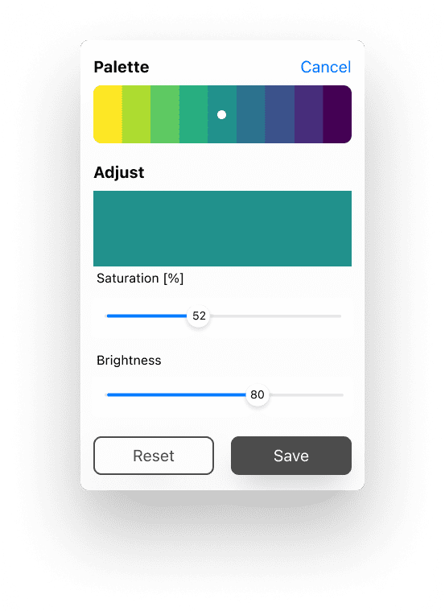

Color Ramp Generator - iOS/Android App
Phase 1 (done)
Phase 2

Accessible Color Ramps
There are around 300 million people in the world with color vision issues so I am keen to promote the use of colorblind-friendly color ramps, particularly from matplotlib. These palettes are beautiful and been tested on some common conditions of colorblindness.

Beautiful
We can make reporting visuals more engaging and less overwhelming when using harmonious color ramps.

Enhancing Data Visualizations
This makes it easier to interpret complex data.

Save discrete sets for later
Each configuration can be saved, shared, and used for just about any type of visualization.

The Idea
There are already a few online websites where you can generate these same palettes. I really wanted to to bring this capability into a mobile app that can be used offline and have some additional capabilities. These would include letting the user customize individual colors and perform accessibility tests.
Swift Test
One evening, I downloaded the colormap data and tested some basic logic in SwiftUI.
A Proposal
I took the opportunity to jump into Figjam and think the idea through.

User Flow
For this app, users would have access to data points on the colormaps and be able to
- Generate a uniform color palette of any size
- Generate a nonuniform color palette of any size
- Save and share their color palettes
- Test the colors performance in data visualizations, colorblind conditions and contrast.
- Have a little fun by using the colormaps to filter images

Grey Boxing
I really love designing (and building) for Native, so much that even when grey-boxing I could not seem to shut up.
iOS versus Android
Pointing out every single design difference in each OS.

App Store Inspiration
The best design inspiration comes from analyzing real apps directly on your phone. I carry both an iPhone and Samsung phone daily partially for this reason.

Updated Screen Designs
Improved by seeing what others have built.

Sounds and Haptic Feedback
To enhance user engagement.

Gestures
Can the user hold this app in one hand while using a BI tool in the other hand?
Navigational Gestures (1 tap)
- Tab bar
- 'More' menu
- Test button
- Single color drill-down
Action Gestures (1 tap)
- Reset
- Save
- Share
Transform Gestures
- Number of Colors (iOS pick, Android slide)
- Color position (slide)

Final Screens (iOS and Android)
Accessibility
If adjusting the colors we can check again the accessibility of the charts

iOS Screens
It felt like there was little available when it came to native iOS components for Figma however I discovered "Play", which solves this challenge beautifully (I cannot wait to use it in a project).

Android Screens
The number of very well maintained android components made the Android screens much easier to build.

Figma Party
iOS Night
I challenge somebody to do this using a trackpad.

Android Night
I challenge somebody to do this using a trackpad.

User Feedback
iOS and Android - Delightfully Different
Designing for true native apps
Uniform Color Ramp
Right from our pocket we can select a set of colors from the desired color map.

Custom Color Ramp Points
But maybe we want to customize the points, and leave out yellow.

Save Colors
Regardless of how we customize the ramp, we can save all of them to access later

Contrast Test
We can test the contrast, without having to go to another website or app

Data Chart Test
And have a look at how they would appear in popular charts

Colorblind Test
We can also very, especially after making adjustments, that set is still colorblind friendly.

About
This app was inspired by the original creators of these colormaps who have kindly provided access to the color data.

What's next?
What I learned
The best design inspiration comes from analyzing real apps.